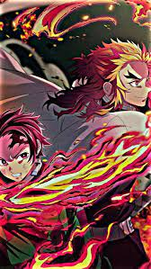

Minha infancia foi dificil,mas eu me esforcei
minha mãe perdeu a vida e assim o meu pai mudou assumi essa
responsa e não me entreguei por que só a agustica que restou
Mãe eu prometo que eu vou salvar os mais fracos com tudo
que ha em mim
pode crer que nao vai ser assim!
se esse trem e infinito,hoje conhece o fim
o sorriso no meu rosto nunca vai sumir
sou como a chama de esperanca que só vai subir
você não vai me parar!
a vida das pessoas voce não vai tirar!
postura ja ta feita agora eu posso respirar
e eu me toro o proprio fogo então só deixa ele espalhar
Eu vou encarar
o verdadeiro demonio que veio me buscar
eu nao vou recuar!eu vou e arriscar!
tudo aquilo que tenho por que todos vou salvar!
pode ferir meu corpo,nao vou virar oni
continuo humano,nao vai derrubar
meu corponao se regenera como o seu
mas nao vai me abalar
eu sou como o fogo que não se apaga
tentarme extinguir so me alastra
eu nao vou te soltar ate o amanhecer
a chama da coragem nao vai se apagar
pois se ela nao brilhar em mimvai brilhar em voce
herdei o fogo
que vem da minha alma
vejo seu rosto só respire e se acalma
herdei as chama
e a sua e como uma danca
na minha espada
que pra todos trás esperanca
tanjiro kamado
eu lembro do modo como voce partiu
isso me parte o coração
na noite mais escura
voce foi a luz que iluminou a escuridao
lua covarde!
por que fugiu do confronto?
voce que se regenera,tem a imortalidade
mas nessa noite temeu um humano!
E eu sigui seu fundamento
eu guardei seu protetor
uso ele na espada
pra lembrar do que falou
Range forte os seus dentes e sempre siga em frente
cé tem tudo que precisava,guarde isso na sua mente
e eu to contente por viver na mesma era que meus amigos
que eu seja então a base que ilumina no escuro o sue caminho
Herdei o fogo
que vem da minha alma
vejo seu rosto
so respire e se acalma
Herdei a chama
e a sua e como uma danca
na minha espada
que pra todos tras esperanca
O que eu faco nesse estado?
o inimigo e muito forte eu não consigo aguentar
jovem kamado,respire devagar
e só outra dificuldade que vocÊ vai superar
os ferimentos em meu corpo
levante-se de novo e nunca deixe de tentar
e verdade,sera em vão
nós somos a luz na escuridão
Somos o fogo
que vem da sua alma
na noite guia
e smepre te acalma.
lex clesh
voltar para home1